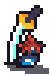
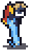
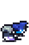

これって何ですか？
USC（南カリフォルニア大学）の2024年秋学期で書いた分析集です。
気に入ったRPGターン制システムだらけです。※注意：英語だけです！
ゲームに関してターン制バトルを特に気に入ります。
自分のために書いたが、他の方々に役に立てば嬉しいです。
ドット絵は自分で描いたものです。分析した順番で揃っております。
どうぞ！

『Chrono Trigger』（クロノ・トリガー）
スクウェア | 発売日：1995年3月11日（SFC）
ATB / Active Time Battle
連携技
タイミング
読む (Google ドキュメント) (英語)

『Final Fantasy X』（ファイナルファンタジーX）
スクウェア | 発売日：2001年7月19日（PS2）
カウントタイムバトル
スフィア盤
弱点突く Turn Economy (ターンエコノミー)
読む (Google ドキュメント) (英語)
弱点突く Turn Economy (ターンエコノミー)

『真・女神転生V Vengeance』
アトラス | 発売日：2024年6月14日（PC, Switch, PS4, PS5, Xbox Series X/S, Xbox One）
プレスターンバトル
弱点突く
Team Building (チーム編成)
Turn Economy (ターンエコノミー) バフ集め プレーヤーと相手ターン
読む (Google ドキュメント) (英語)
Turn Economy (ターンエコノミー) バフ集め プレーヤーと相手ターン
『グランブルーファンタジー』
Cygames | 発売日：2024年3月10日 (ブラウザ)
スキルクールダウン
武器編成
プレーヤーと相手ターン Team Building (チーム編成) バフ集め
読む (Google ドキュメント) (英語)
プレーヤーと相手ターン Team Building (チーム編成) バフ集め
『DEVIL SURVIVOR 2 BREAK RECORD』 (デビルサバイバー２ ブレイクレコード)
アトラス | 発売日：2011年7月28日 (DS、『デビルサバイバー２』として)
EXTRAターンシステム
Team Building (チーム編成)
シミュレーションRPG
弱点突く
読む (Google ドキュメント) (英語)
弱点突く

『Bravely Default』 (ブレイブリーデフォルト)
スクウェア・エニックス | 発売日：2012年10月11日 (3DS、
『ブレイブリーデフォルト フライングフェアリー』として)
伝統的ターン制
ジョブチェンジ
Turn Economy (ターンエコノミー)
バフ集め
読む (Google ドキュメント) (英語)
バフ集め
結果
「システムでシステムを転じさせる」ということが好きみたいです。英語で、「システムを壊す」という感覚も好きです。
「システムを壊す」というのは、ゲームを本当に壊すことではなくて、ゲームシステムであるものをダンダン付け込んで、まるで ”ゲームを壊した気分” になったということです。
分析したゲームは大抵ターン制に関して何かができました。（例え：ターンを減るや増える、行動回数、順番、など）
- 『クロノ・トリガー』: ATBのタイミングと相手の動きに合わせて、連携技を使う
- 『ファイナルファンタジーX』: コマンドの重さは次のターンに影響する
- 『真・女神転生V Vengeance』: 攻撃の効果、パッシブスキル、バフ、コマンドなどは行動回数とダメージを変化する
- 『グランブルーファンタジー』: ボスにぶちこめる一番最適なパーティを作ること
- 『デビルサバイバー２』: 仲魔の種族スキルを使え、SRPGの伝統を破れる（例: 2回移動出来と移動力は8にする、6マスから攻撃射程と2回攻撃出来る、など）
- 『ブレイブリーデフォルト』: BPの回復、消費を変わる